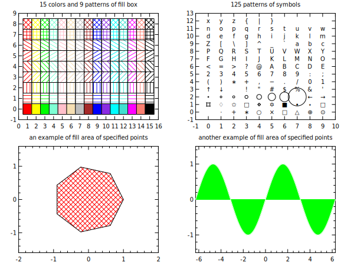

viewport 0.1 0.9 0.1 0.9 0.76
div 2 2
title "15 colors and 9 patterns of fill box"
box 0 16 -1 9 (xt:1 yt:1 xn:1 yn:1)
do fc 1 15 ;# fill area colors
do ft 0 8 ;# fill area pattens
@ x0 = [fc]-0.5
@ x1 = [fc]+0.5
@ y0 = [ft]-0.5
@ y1 = [ft]+0.5
fbox [x0] [x1] [y0] [y1] (fc:[fc] ft:[ft] rp:1)
end
end
title "125 patterns of symbols"
box -1 10 -1 13 (xt:1 yt:1 xn:1 yn:1)
do n 1 125
@ x = [n]%10
@ y = floor([n]/10)
symb [x] [y] (st:[n])
end
title "an example of fill area of specified points"
box -2 2 -1.6 1.6
@ pi2 = 3.14159265*2
set t = range(8,0,[pi2])
set x = cos(t)
set y = sin(t)
fill x y (fc:red ft:pn45 rp:1)
title "another example of fill area of specified points"
box -[pi2] [pi2] -1.5 1.5
set x = range(100,-[pi2],[pi2])
set y = sin(x)
fill x y (gd:1 lc:white fc:green ft:solid rp:1)
